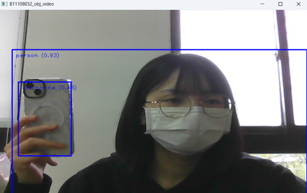
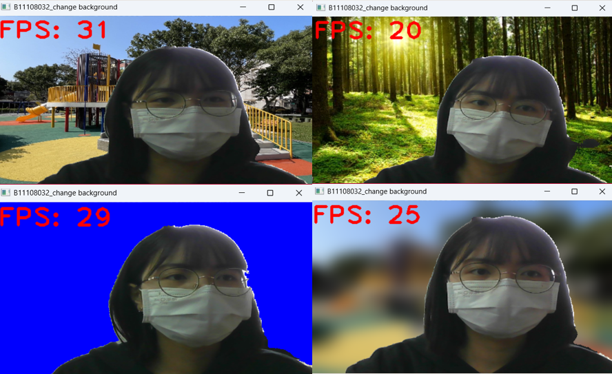
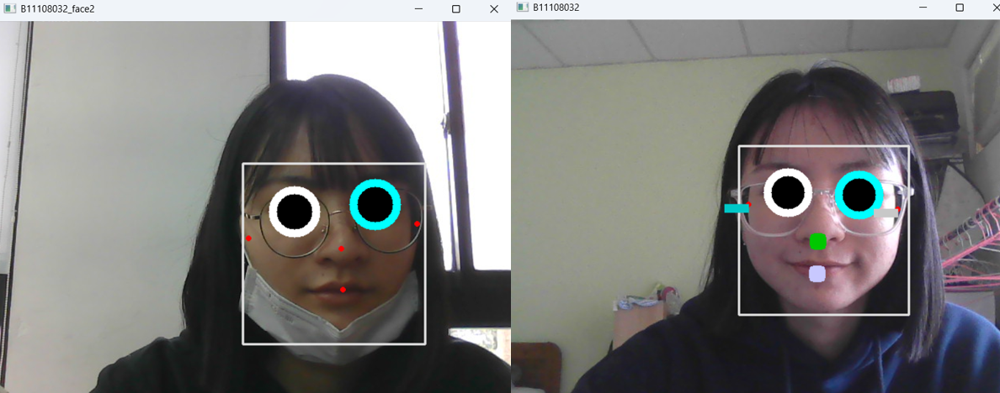

🎯 物件識別
使用 EfficientDet 模型實現多類別物件辨識

👤 人物去背
使用 SelfieSegmentation 模組實現背景替換與模糊

😊 臉部關鍵點偵測
辨識臉部五官位置並進行圖形標示

💻 程式碼展示
▶️ 物件識別（MediaPipe + EfficientDet Lite）
import cv2
import mediapipe as mp
base_options = mp.tasks.BaseOptions('models/efficientdet_lite0.tflite')
options = mp.tasks.vision.ObjectDetectorOptions(base_options, score_threshold=0.2)
detector = mp.tasks.vision.ObjectDetector.create_from_options(options)
cap = cv2.VideoCapture(0)
while cap.isOpened():
success, image = cap.read()
image = cv2.resize(image, (800, 480))
image_mp = mp.Image(mp.ImageFormat.SRGB, image)
detection_result = detector.detect(image_mp)
for detection in detection_result.detections:
bbox = detection.bounding_box
cv2.rectangle(image, (bbox.origin_x, bbox.origin_y),
(bbox.origin_x + bbox.width, bbox.origin_y + bbox.height), (255, 0, 0), 2)
category = detection.categories[0]
result_text = category.category_name + ' (' + str(round(category.score, 2)) + ')'
cv2.putText(image, result_text, (10 + bbox.origin_x, 20 + bbox.origin_y),
1, 1, (255, 0, 0), 1)
cv2.imshow('B11108032_obj_video', image)
if cv2.waitKey(1) & 0xFF == 27:
break
cap.release()
cv2.destroyAllWindows()▶️ 人物去背（MediaPipe Selfie Segmentation）
import cv2
import numpy as np
import mediapipe as mp
import time
blur = 0
prev_time = 0
bg_image = None
BG_COLOR = (255, 0, 0)
selfie_segmentation = mp.solutions.selfie_segmentation.SelfieSegmentation(0)
cap = cv2.VideoCapture(0)
while cap.isOpened():
success, image = cap.read()
if not success:
print("Ignoring empty camera frame.")
continue
img = cv2.resize(image, (520, 300))
imgrgb = cv2.cvtColor(img, cv2.COLOR_BGR2RGB)
results = selfie_segmentation.process(imgrgb)
condition = np.stack((results.segmentation_mask,) * 3, axis=-1) > 0.1
if bg_image is None:
bg_image = np.zeros([300, 520, 3], np.uint8)
bg_image[:] = BG_COLOR
else:
bg_image = cv2.resize(bg_image, (520, 300))
if blur > 0:
bg_image = cv2.GaussianBlur(bg_image, (55, 55), 0)
blur = 0
output_image = np.where(condition, img, bg_image)
cv2.putText(output_image, f'FPS: {int(1 / (time.time() - prev_time))}',
(3, 40), cv2.FONT_HERSHEY_PLAIN, 3, (0, 0, 255), 3)
prev_time = time.time()
cv2.imshow("B11108032_change background", output_image)
keyb = cv2.waitKey(1) & 0xFF
if keyb == 27:
break
elif keyb == ord('0'):
bg_image = None
elif keyb == ord('1'):
bg_image = cv2.imread('pic/bgc.jpg')
elif keyb == ord('2'):
bg_image = cv2.imread('pic/forest.jpg')
elif keyb == ord('3'):
bg_image = cv2.imread('pic/park.jpg')
elif keyb == ord('b'):
blur += 1
cap.release()
cv2.destroyAllWindows()▶️ 臉部關鍵點偵測（MediaPipe Face Detection）
import cv2
import mediapipe as mp
mp_face_detection = mp.solutions.face_detection
mp_drawing = mp.solutions.drawing_utils
face_detection = mp_face_detection.FaceDetection(model_selection=0, min_detection_confidence=0.5)
cap = cv2.VideoCapture(0)
while cap.isOpened():
success, image = cap.read()
imgrgb = cv2.cvtColor(image, cv2.COLOR_BGR2RGB)
results = face_detection.process(imgrgb)
w, h = image.shape[1], image.shape[0]
if results.detections:
for detection in results.detections:
mp_drawing.draw_detection(image, detection)
s = detection.location_data.relative_bounding_box
eye = int(s.width * w * 0.1)
a = detection.location_data.relative_keypoints[0]
b = detection.location_data.relative_keypoints[1]
n = detection.location_data.relative_keypoints[2]
m = detection.location_data.relative_keypoints[3]
c = detection.location_data.relative_keypoints[4]
d = detection.location_data.relative_keypoints[5]
ax, ay = int(a.x * w), int(a.y * h)
bx, by = int(b.x * w), int(b.y * h)
nx, ny = int(n.x * w), int(n.y * h)
mx, my = int(m.x * w), int(m.y * h)
cx, cy = int(c.x * w), int(c.y * h)
dx, dy = int(d.x * w), int(d.y * h)
cv2.circle(image, (ax, ay), (eye + 10), (255, 255, 255), -1)
cv2.circle(image, (bx, by), (eye + 10), (255, 255, 0), -1)
cv2.circle(image, (ax, ay), eye, (0, 0, 0), -1)
cv2.circle(image, (bx, by), eye, (0, 0, 0), -1)
cv2.rectangle(image, (nx, ny), (nx - 10, ny + 10), (0, 200, 0), 10)
cv2.rectangle(image, (mx, my), (mx - 10, my + 10), (255, 200, 200), 10)
cv2.rectangle(image, (cx, cy), (cx - 30, cy + 10), (200, 200, 0), -1)
cv2.rectangle(image, (dx, dy), (dx - 30, dy + 10), (200, 200, 200), -1)
cv2.imshow('B11108032', image)
if cv2.waitKey(5) & 0xFF == 27:
break
cap.release()
cv2.destroyAllWindows()